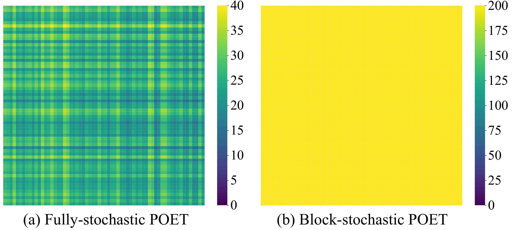
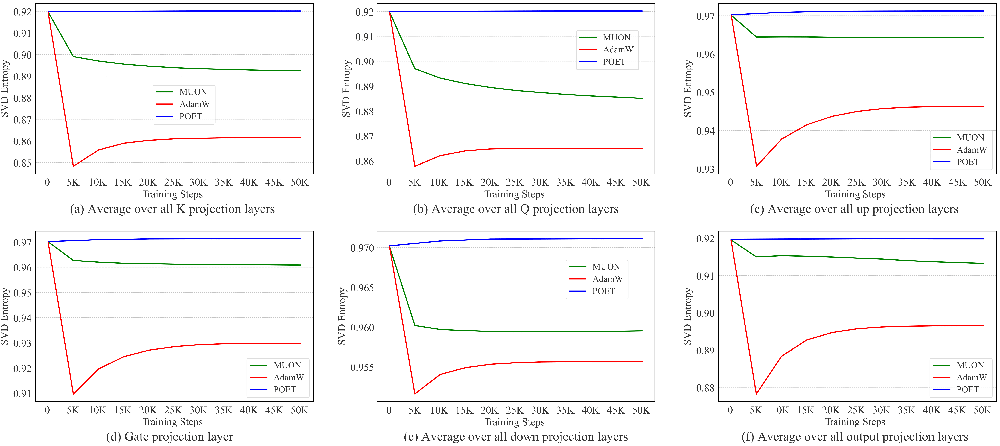
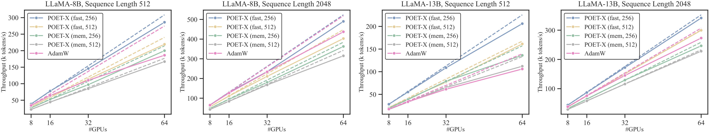
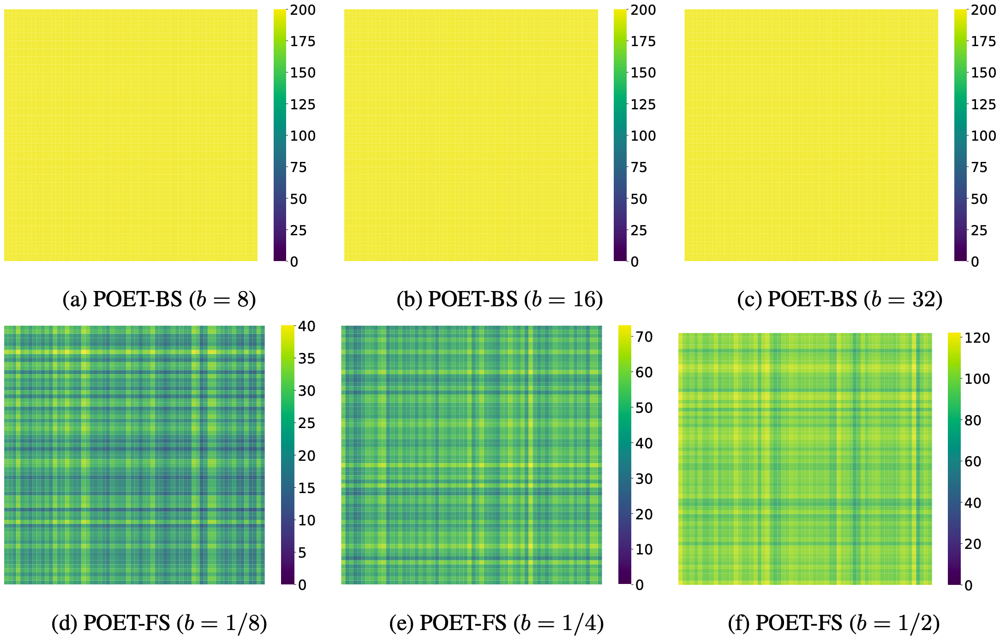
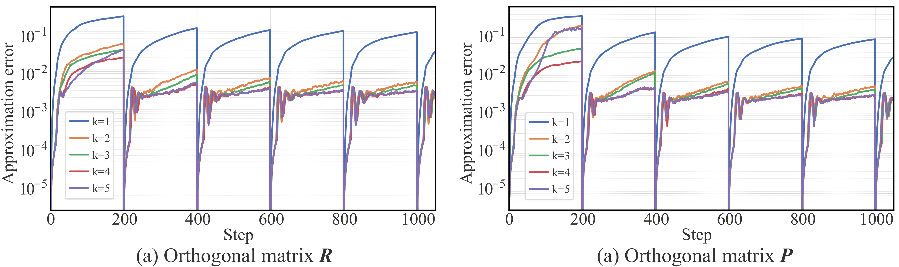

Efficient and stable training of large language models (LLMs) remains a core challenge in modern machine learning systems. To address this challenge, Reparameterized Orthogonal Equivalence Training (POET), a spectrum-preserving framework that optimizes each weight matrix through orthogonal equivalence transformation, has been proposed. Although POET provides strong training stability, its original implementation incurs high memory consumption and computational overhead due to intensive matrix multiplications. To overcome these limitations, we introduce POET-X, a scalable and memory-efficient variant that performs orthogonal equivalence transformations with significantly reduced computational cost. POET-X maintains the generalization and stability benefits of POET while achieving substantial improvements in throughput and memory efficiency. In our experiments, POET-X enables the pretraining of billion-parameter LLMs on a single Nvidia H100 GPU, and in contrast, standard optimizers such as AdamW run out of memory under the same settings.
The de facto way for training LLMs is to directly optimize weight matrices with the Adam optimizer. While conceptually simple, this direct optimization can be computationally intensive (due to the poor scaling with model size) and requires careful hyperparameter tuning to ensure stable convergence. More importantly, its generalization can remain suboptimal even if the training loss is perfectly minimized. To stabilize training and enhance generalization, various weight regularization methods and weight normalization techniques have been proposed. Most of these methods boil down to improving spectral properties of weight matrices (i.e., singular values) either explicitly or implicitly. Intuitively, the spectral norm of a weight matrix (i.e., the largest singular value) provides an upper bound on how much a matrix can amplify the input vectors, which connects to the generalization properties. In general, smaller spectral norms (i.e., better smoothness) are considered to be associated with stronger generalization, which inspires explicit spectrum control. Theoretical results also suggest that weight matrices with bounded spectrum can provably guarantee generalization.
Fully-stochastic POET (with \( b=1/8 \) ) vs. block-stochastic POET (with $b=8$) for the weight matrix update coverage. In the toy experiment, we use a $64\times64$ weight matrix and run both POET variants for 100-step update, so 200 are the largest possible update steps (multiplication by $\bm{R}$ and $\bm{P}$ counts as two updates). Block-stochastic POET ensures balanced update for the weight matrix while fully-stochastic POET does not. We build POET-X on top of block-stochastic POET due to its uniform coverage of all dimensions of the weight matrix. This property is important for memory-efficiency, because it ensures the balanced weight update even with a very small number of parameters unlike the fully-stochastic POET.

Training dynamics of singular values of the same weight matrix in a LLaMA model using standard training (AdamW) and POET.
Inspired by Muon [4], we conduct a spectral analysis by comparing the singular spectrum among AdamW, Muon and POET. We compute SVD entropy of the trained Llama-60M model at different iterations. The SVD entropy, defined as \( H(\boldsymbol{\sigma}) = \frac{1}{\log n} \sum_i \frac{\sigma_i^2}{\sum_j \sigma_j^2} \log \frac{\sigma_i^2}{\sum_j \sigma_j^2} \), measures the diversity of singular values; higher entropy indicates a more uniform and diverse spectrum. As shown in Figure 4, POET consistently maintains high spectral diversity throughout training, owing to its orthogonal equivalence transformation. Consistent with [4], Muon also yields more diverse spectral updates than AdamW.

Dynamics comparison of average singular value entropy (singular value diversity) between direct training (AdamW, Muon) and POET.
Our proposed POET has two key properties:
We perform the pretraining experiments on the Llama transformers of varying sizes (60M, 130M, 350M, 1.3B) for POET. We use the C4 dataset, a cleaned web crawl corpus from Common Crawl, widely used for LLM pretraining. The training results are summarized below, the validation perplexity and the trainable parameters are reported.

To highlight POET's non-trivial performance improvement, we increase the training steps (i.e., effectively tokens seen) for AdamW, and find that POET-FS (\( b = 1/2 \)) still outperforms AdamW even if AdamW is trained with almost triple the number of tokens.

To highlight POET's non-trivial performance improvement, we increase the training steps (i.e., effectively tokens seen) for AdamW, and find that POET-FS (\( b = 1/2 \)) still outperforms AdamW even if AdamW is trained with almost triple the number of tokens.

By introducing a hyperparameter \( b \) as the sampling budget, fully stochastic SPO decouples parameter complexity from the size of the weight matrices. With a small \( b \), POET becomes highly parameter-efficient, though at the cost of slower convergence. This offers users a flexible trade-off between efficiency and speed. In contrast, block-stochastic SPO has parameter complexity dependent on the matrix size (i.e., \( m + n \)), making it more scalable than AdamW, which requires \( mn \) trainable parameters. In terms of memory complexity, both POET variants can be much more efficient than AdamW with a suitable sampling budget \( b \). A comparison of parameter and memory complexity is given below:
| Method | # trainable params | Memory cost |
|---|---|---|
| AdamW | \( mn \) | \( 3mn \) |
| GaLore | \( mn \) | \( mn + mr + 2nr \) |
| POET (FS) | \( b(b-1) \) | \( mn + 3b(b-1) \) |
| POET (BS) | \( \frac{1}{2}(m+n)(b-1) \) | \( mn + \frac{3}{2}(m+n)(b-1) \) |
POET reparameterizes each neuron as \(\mathbf{W}_{RP} = \mathbf{R}\mathbf{W}_0\mathbf{P}\), where \(\mathbf{W}_0 \in \mathbb{R}^{m \times n}\) is a fixed random weight matrix, and \(\mathbf{R} \in \mathbb{R}^{m \times m}\), \(\mathbf{P} \in \mathbb{R}^{n \times n}\) are trainable orthogonal matrices.
This formulation performs an orthogonal equivalence transformation (OET) on \(\mathbf{W}_0\), defined as \(\text{OET}(\mathbf{W}; \mathbf{R}, \mathbf{P}) = \mathbf{R}\mathbf{W}\mathbf{P}\), which multiplies \(\mathbf{W}\) by orthogonal matrices from both sides. The forward pass of POET is thus:
After training, \(\mathbf{R}\) and \(\mathbf{P}\) can be merged into \(\mathbf{W}_{RP}\), ensuring that POET-trained networks have no inference overhead.
In block-stochastic POET, the orthogonal matrix \(\mathbf{R}_i\) is parameterized as a block-diagonal structure with random permutations:
The weight-centric implementation incurs \(\mathcal{O}(nm^2)\) complexity. To solve this, we use an input-centric formulation:
The complete inference formula for one weight matrix is defined as:
where \(\mathbf{R}=\mathbf{\Phi}_m^\top\mathbf{G}_R\mathbf{\Phi}_m\) and \(\mathbf{P}=\mathbf{\Phi}_n^\top\mathbf{G}_P\mathbf{\Phi}_n\). To minimize memory overhead, we implement two core optimizations:
Instead of explicit matrix construction, we use a custom CUDA operator to implement index mapping. For permutations \(\pi_p\) and \(\pi_q\), we apply the following bijections:
By accessing weights in a prescribed order, this approach achieves up to 20× speedup in both forward and backward passes.
In the input-centric formulation, we merge two permutations directly into \(\mathbf{W}\) at the start of the inner loop:
Since \(\mathbf{W}\) remains fixed during the optimization of \(\mathbf{G}_P\) and \(\mathbf{G}_R\), pre-computing the permuted weights eliminates redundant calculations and significantly reduces total runtime.
Multiplications occur only within blocks. We skip full matrix construction and treat blocks as a batch, performing batch-wise matrix multiplications to save GPU memory and improve runtime.
POET-X stores only the upper-triangular part of skew-symmetric matrices \(\mathbf{Q}\), halving the memory footprint. We use Triton for kernel fusion in the Cayley-Neumann expansion:
The backward pass is also fused using the following gradient derivation:
Forward pass sequence: \(\mathbf{mm1}: \mathbf{a} = \mathbf{G}_R^\top \mathbf{x}\), \(\mathbf{mm2}: \mathbf{b} = \mathbf{W} \mathbf{a}\), and \(\mathbf{mm3}: \mathbf{z} = \mathbf{G}_P^\top \mathbf{b}\).
Standard Autograd saves \(\mathbf{b}\) to compute \(\nabla_{\mathbf{G}_P}\). \(\text{POET-X}_{\text{mem}}\) uses gradient checkpointing to recompute \(\mathbf{b}\) on-the-fly, eliminating this storage cost.
Leveraging custom CUDA kernels for both forward and backward passes, POET-X readily supports quantized training. The core mechanism involves storing only the base model’s low-bit quantized weight matrices and dequantizing them on the fly. This ensures that high-precision weights are never stored in memory during the activation phase.
Consequently, POET-XQ is specifically implemented on POET-Xmem. In this configuration, intermediate activations are recomputed during the backward pass to save space. In contrast, POET-Xfast is less suitable for quantized training because it requires storing extra activation tensors, which would necessitate keeping high-precision weight matrices in memory.
POET reparameterizes each neuron as \(\mathbf{W}_{RP} = \mathbf{R}\mathbf{W}_0\mathbf{P}\), where \(\mathbf{W}_0 \in \mathbb{R}^{m \times n}\) is a fixed random weight matrix, and \(\mathbf{R} \in \mathbb{R}^{m \times m}\), \(\mathbf{P} \in \mathbb{R}^{n \times n}\) are trainable orthogonal matrices.
This formulation performs an orthogonal equivalence transformation (OET) on \(\mathbf{W}_0\), defined as \(\text{OET}(\mathbf{W}; \mathbf{R}, \mathbf{P}) = \mathbf{R}\mathbf{W}\mathbf{P}\), which multiplies \(\mathbf{W}\) by orthogonal matrices from both sides. The forward pass of POET is thus:
After training, \(\mathbf{R}\) and \(\mathbf{P}\) can be merged into \(\mathbf{W}_{RP}\), ensuring that POET-trained networks have no inference overhead.
In block-stochastic POET, for the \(i\)-th iteration, the orthogonal matrix \(\mathbf{R}_i\) is parameterized by:
in which \(\tilde{\mathbf{G}}^j_i \in \mathbb{R}^{b \times b}\) is the \(j\)-th block of the block-diagonal orthogonal matrix \(\mathbf{G}_i\), and \(\mathbf{\Psi}_i, \forall i\) are all random permutation matrices. \(\mathbf{P}_i\) is also parameterized the same way.
The original implementation of POET directly operates on the weight matrix \(\mathbf{W}\) (i.e., \(\mathbf{W} \leftarrow \mathbf{R}_i \mathbf{W} \mathbf{P}_i\)), which is a weight-centric formulation. Despite simplicity, the weight-centric implementation incurs \(\mathcal{O}(nm^2)\) complexity (assuming an input vector \(\mathbf{x} \in \mathbb{R}^m\)). Moreover, when computing the gradient w.r.t. \(\mathbf{R}_i\) and \(\mathbf{P}_i\), both gradients require accessing the weight matrix \(\mathbf{W}\), thus increasing the memory. Inspired by matrix-free computation in solving large-scale linear systems, we use an input-centric formulation to implement the update \(\mathbf{W} \leftarrow \mathbf{R}_i \mathbf{W} \mathbf{P}_i\), as shown below:
where the left is the weight-centric formulation which requires two matrix-matrix multiplications and one matrix-vector multiplication, and the right is the input-centric formulation which requires three matrix-vector multiplications. Inputing the permutation matrices into the forward pass, we get the following formula:
where \(\mathbf{R} = \mathbf{\Phi}_m^\top\mathbf{G}_R\mathbf{\Phi}_m\) and \(\mathbf{P} = \mathbf{\Phi}_n^\top\mathbf{G}_P\mathbf{\Phi}_n\).
To avoid explicitly constructing the permutation matrices, we implement our customized CUDA operator to perform the permutation. The key idea is to implement an index mapping. Let \(\mathbf{W} \in \mathbb{R}^{m \times n}\) be the original matrix, \(\mathbf{W}_{i, :}\) be the \(i\)-th row of \(\mathbf{W}\), and \(\mathbf{W}_{:, j}\) denote the \(j\)-th column. We define two base index sets \(\mathcal{I}_m = \{1, 2, \dots, m\}\) and \(\mathcal{I}_n = \{1, 2, \dots, n\}\). Then a permutation of indices \(\pi\) is defined as \(\pi(\mathcal{I}_m) = \{\pi(1), \pi(2), \dots, \pi(m)\}\) where \(\pi : \mathcal{I} \to \mathcal{I}\) is a bijection. \(\pi^{-1}\) defines the inverse mapping, and therefore \(\pi(\pi^{-1}(i)) = i\). Let \(\mathbf{\Psi}_m \in \{0, 1\}^{m \times m}\) be defined by \(\pi_p\), and \(\mathbf{\Psi}_n \in \{0, 1\}^{n \times n}\) be defined by \(\pi_q\).
To avoid explicitly constructing permutation matrices, we implement a customized CUDA operator that performs index mapping. For a weight matrix \(\mathbf{W} \in \mathbb{R}^{m \times n}\), given permutations \(\pi_p\) and \(\pi_q\), the following equations always hold:
By accessing the weight matrix in this prescribed order, we eliminate the need for large matrix-matrix multiplications with sparse permutation matrices. Our customized CUDA operator achieves up to 20× speedup compared to standard implementations.
In the input-centric formulation, the forward pass involves four permutations. However, we can merge two of these into the weight matrix \(\mathbf{W}\) in advance:
Since \(\mathbf{W}\) remains fixed during the inner loop of optimizing \(\mathbf{G}_P\) and \(\mathbf{G}_R\), pre-computing the permuted \(\mathbf{W}\) significantly reduces redundant computation.
In block-stochastic POET, the orthogonal matrices \(\mathbf{G}_P\) and \(\mathbf{G}_R\) adopt a block-diagonal sparse structure:
Instead of constructing these massive sparse matrices, we observe that multiplications only occur within each block. We propose a batch-parallel strategy: each block is treated as an independent matrix in a batch, and we perform batch-wise matrix multiplications. This approach drastically reduces GPU memory consumption and improves runtime efficiency.
Efficiently ensuring that each diagonal block (e.g., \(\tilde{\mathbf{G}}^i_P, \tilde{\mathbf{G}}^j_R\)) remains orthogonal during training is a major challenge. POET-X optimizes the Cayley-Neumann Parameterization (CNP) by optimizing the two steps skew_symmetric and cayley_neumann.
In the skew_symmetric operation, the algorithm constructs a skew-symmetric matrix \(\mathbf{Q} \in \mathbb{R}^{b \times b}\) from the stored parameters. By definition, this matrix satisfies the anti-symmetry property: \(\mathbf{Q} = -\mathbf{Q}^\top\). In POET-X, we store skew-symmetric matrices \(\mathbf{Q}\) using only their upper-triangular part. This reduces the parameter count from \(b^2\) to \(b(b-1)/2\), effectively halving the memory footprint for optimizer states and gradients. The skew_symmetric operation efficiently reconstructs the full matrix \(\mathbf{Q}\) from these compact parameters.
In the cayley_neumann operation, the algorithm computes the Cayley transform of \(\mathbf{Q}\) by re-arranging the CNP terms (for \(k=3\)), we observe a shared dependency on lower-order terms:
Since all computations depend solely on \(\mathbf{Q}\) and \(\mathbf{Q}^2\), we leverage kernel fusion via Triton. The tensors \(\mathbf{Q}\) and \(\mathbf{Q}^2\) are loaded once into high-speed shared memory, where higher-order terms are computed and summed within a single kernel. This minimizes global memory (VRAM) traffic and reduces CPU launch overhead.
The same fusion strategy is applied to the backward pass. Given a function \(f(\mathbf{G}(\mathbf{Q}))\), the gradient with respect to \(\mathbf{Q}\) is derived as:
The gradient \(\frac{\partial f}{\partial \mathbf{Q}}\) depends on \(\mathbf{Q}, \mathbf{Q}^2, \nabla_1,\) and \(\nabla_2\). By implementing this as a customized Triton operator, we gain fine-grained control over GPU memory access. Empirical evaluations show a \(3\times\)speedup over native PyTorch implementations.
Your paragraph text here.
Leveraging custom CUDA kernels for both forward and backward passes, POET-X readily supports quantized training. The core mechanism involves storing only the base model’s low-bit quantized weight matrices and dequantizing them on the fly. This ensures that high-precision weights are never stored in memory during the activation phase.
Consequently, POET-XQ is specifically implemented on POET-Xmem. In this configuration, intermediate activations are recomputed during the backward pass to save space. In contrast, POET-Xfast is less suitable for quantized training because it requires storing extra activation tensors, which would necessitate keeping high-precision weight matrices in memory.
Since POET preserves the spectral properties of the initial weight matrix \( \mathbf{W}_0 \), the choice of initialization plays a critical role. We propose to use the normalized Gaussian initialization, which normalizes neurons drawn from a zero-mean Gaussian with fixed variance. We empirically compare different random initialization schemes for POET in the following table. Results show that the normalized Gaussian initialization leads to the best final performance. We hypothesize that the reason for this favorable performance is that POET with normalized Gaussian initialization preserves both hyperspherical energy and the spectrum during training.
| Scheme | Perplexity |
|---|---|
| Standard | 26.22 |
| Xavier | 25.79 |
| Uniform Spectrum | 27.29 |
| Normalized Gaussian | 25.37 |
Hyperspherical energy \( \mathrm{HE}(\cdot) \) characterizes the uniformity of neurons on a unit hypersphere and can be used to characterize the neural representation of each layer. Orthogonal training [2,3] with \( \hat{\mathbf{w}}_i = \mathbf{w}_i / \|\mathbf{w}_i\| \) ensures the preservation of hyperspherical energy during training:
Prior work [2] has shown that energy-preserving training can effectively improve generalization.
Under zero-mean isotropic Gaussian initialization, spectrum-preserving training and energy-preserving training can be achieved simultaneously by POET. It also partially explains why the proposed normalized Gaussian initialization achieves the best performance (Proof in the Appendix B).

Throughput (k tokens/s) across different numbers of GPUs. The solid line denotes the actual throughput, and the dashed line denotes the ideal linear scaling throughput. The ideal throughput of $k$ GPUs is defined as $T_{k, ideal}=T_{8,real}\times k /8$.
To better understand how POET functions, we employ vector probing to analyze the learning dynamics of the orthogonal matrices. Vector probing evaluates an orthogonal matrix \( \mathbf{R} \) using a fixed, randomly generated unit vector \( \mathbf{v} \) by computing \( \mathbf{v}^\top \mathbf{R} \mathbf{v} \), which corresponds to the cosine similarity between \( \mathbf{R}\mathbf{v} \) and \( \mathbf{v} \). By inspecting the cosine similarities of seven orthogonal matrices throughout training, we observe that the learning process can be divided into three distinct phases (see Figure 1):
Several previous works on generalization based on bounding the spectral norm of weight matrices. In particular, the spectrally-normalized margin analysis from Bartlett et al. bounds the misclassification error in terms of a margin-based training loss and a complexity term. The complexity term is proportional to \( Q/(\gamma n) \) where \( \gamma \) and \( n \) are margin and sample size and \( Q \) bounds the spectral complexity. For an \( L \)-layer ReLU MLP and maximal width \( d \), \( Q \) is bounded by
\( Q = \left( \prod_{i=1}^L \lVert \mathbf{W}_i \rVert \right) \left( \sum_{i=1}^L \frac{(\sqrt{d} \lVert \mathbf{W}_i \rVert_F)^{2/3} }{ \lVert \mathbf{W}_i \rVert^{2/3} } \right)^{3/2} \)
where \( \lVert \cdot \rVert \) and \( \lVert \cdot \rVert_F \) denote spectral and Frobenius norm respectively. Those norms remain invariant when training the network with POET and at initialization they can be bounded with high probability using standard results from random matrix theory. The scale at initialization is typically chosen such that \( \mathbf{W} \in \mathbb{R}^{d \times d} \) satisfies \( \lVert \mathbf{W} \rVert = O(1) \) and \( \lVert \mathbf{W} \rVert_F = O(\sqrt{d}) \) so that \( Q = O_L(d) \). For detailed analysis, please refer to the Appendix of the paper.
The POET framework orthogonalizes matrices via two operations: skew_symmetric and cayley_neumann. The first constructs a skew-symmetric matrix \( \mathbf{Q} = -\mathbf{Q}^\top \in \mathbb{R}^{b \times b} \). The second transforms \( \mathbf{Q} \) into an approximately orthogonal matrix using the Cayley–Neumann polynomial (CNP). Empirical results suggest that a CNP of degree \( k = 3 \) offers an optimal balance between accuracy and efficiency, yielding the orthogonal matrix approximation \( \mathbf{G} \):

Illustration of efficient Cayley-Neumann parameterization (batch-wise implementation).
To understand the higher parameter efficiency of POET-BS compared to POET-FS, we employ a toy example to visualize their different weight update mechanisms by counting the total number of updates for each element of the weight matrix. The visualization results are given below. Specifically, in this experiment, a 64 x 64 matrix was randomly initialized and trained for 100 steps under various POET-BS and POET-FS configurations. The merge-then-reinitialize trick is performed at each iteration, and the same set of weight elements was effectively updated between two successive merge-then-reinitialize operations. For each weight element, we compute its total number of update in these 100 steps.

Visualization of the weight update mechanism of POET-BS and POET-FS after 100 steps of update and $\` T_m = 1 \`$.
CNP approximates the matrix inverse using a Neumann series. As the number of Neumann terms directly influences the approximation quality, understanding its impact on model performance is essential. To this end, we evaluate how varying the number of Neumann terms affects performance, using POET-FS with \( b = 1/2 \) to train LLaMA-130M. Results in the following table show that increasing the number of Neumann terms generally improves validation perplexity. However, this also leads to slower training. Moreover, Using only 1 Neumann term (\( k=1 \)) leads to training divergence, highlighting the critical role of maintaining orthogonality. To balance overhead and performance, we find that using 5 Neumann terms is a good trade-off.

Approximation error of orthogonal matrices \( \mathbf{R} \) and \( \mathbf{P} \) of a weight matrix.
| Scheme | Perplexity |
|---|---|
| \( k=1 \) | Not converged |
| \( k=2 \) | 22.56 |
| \( k=3 \) | 21.54 |
| \( k=4 \) | 20.22 |
| \( k=5 \) | 20.19 |
@article{qiu2025poet,
title={Reparameterized LLM Training via Orthogonal Equivalence Transformation},
author={Qiu, Zeju and Buchholz, Simon and Xiao, Tim Z. and Dax, Maximilian and Sch\"olkopf, Bernhard and Liu, Weiyang},
journal={arXiv preprint arXiv:2506.08001},
year={2025}
}